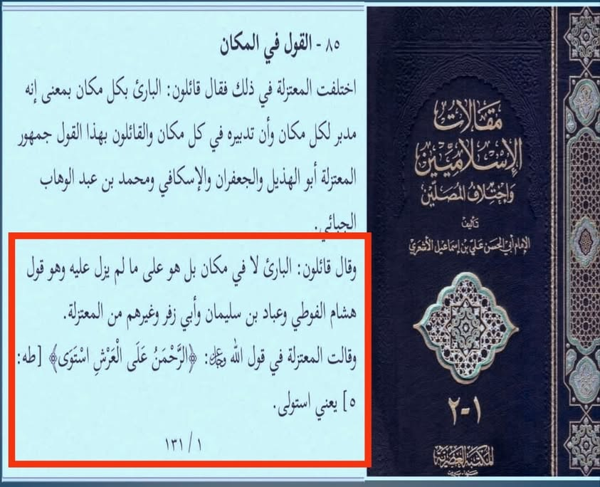

আল্লাহ সর্বত্র বিরাজমান”— এটি আলি হাসান উসামা'র আকিদাহ নয়, কথা সত্য। বরং তার আকিদাহ…
৫ এপ্রিল, ২০২৪
“আল্লাহ সর্বত্র বিরাজমান”— এটি আলি হাসান উসামা'র আকিদাহ নয়, কথা সত্য। বরং তার আকিদাহ হল সেই আকিদাহ, যা ভ্রান্ত বেদআতি মু'তাযিলারা পোষণ করত।
তা হচ্ছে— “আল্লাহ আরশের ঊর্ধ্বে নন; বরং তিনি সৃষ্টির পূর্বে যেভাবে ছিলেন, এখনো সেভাবেই আছেন। আর কোরআনের ‘ইস্তিওয়া’ অর্থ ক্ষমতা বা কর্তৃত্ব গ্রহণ করা।”
বলতে পারেন, এটি যে মু'তাযিলিদের আকিদাহ, তার প্রমাণ কী।
প্রমাণ হল, ইমামু আহলিস সুন্নাহ, ইমাম আবুল হাসান আশআরি রাহ-এর বক্তব্য, যা তিনি মাকালাতে উল্লেখ করেছেন। তিনি বলেন—
......“কতক মু'তাযিলা বলেন— সৃষ্টিকর্তা কোনো স্থানে নন; বরং তিনি যেভাবে ছিলেন, সেভাবেই আছেন। এটি হেশাম আল-ফুয়াতি, আব্বাদ বিন সুলাইমান, আবু যুফার ও অন্যান্য মু'তাযিলিদের বক্তব্য। মু'তাযিলা সম্প্রদায় আল্লাহর বাণী— {রহমান আরশের ওপরে অধিষ্ঠান গ্রহণ করেছেন}— আয়াতের ব্যাপারে বলে, “ইস্তাওলা” তথা তিনি আরশের কর্তৃত্ব/ক্ষমতা গ্রহণ করেছেন।” [মাকালাতুল ইসলামিয়্যিন-১/১৩১]
ইমাম আশআরির বক্তব্য বুঝে থাকলে বলুন, বর্তমান আশআরি-মাতুরিদি আকিদাহ আর সে যুগের মু'তাযিলিদের আকিদায় পার্থক্য কী ছিল?
আমাদের ইমামদের কিতাব থেকে নয়; তাদেরই মান্যবর ইমাম আশআরির রেফারেন্স অনুযায়ী আলি হাসান উসামার আকিদাহ যে সুস্পষ্ট ভ্রান্ত বেদআতি মু'তাযিলি আকিদাহ, তা আর বলার অপেক্ষা রাখে না।
“আল্লাহ সর্বত্র বিরাজমান”— এটি আলি হাসান উসামা'র আকিদাহ নয়, কথা সত্য। বরং তার আকিদাহ হল সেই আকিদাহ, যা ভ্রান্ত বেদআতি মু'তাযিলারা পোষণ করত।
তা হচ্ছে— “আল্লাহ আরশের ঊর্ধ্বে নন; বরং তিনি সৃষ্টির পূর্বে যেভাবে ছিলেন, এখনো সেভাবেই আছেন। আর কোরআনের ‘ইস্তিওয়া’ অর্থ ক্ষমতা বা কর্তৃত্ব গ্রহণ করা।”
বলতে পারেন, এটি যে মু'তাযিলিদের আকিদাহ, তার প্রমাণ কী।
প্রমাণ হল, ইমামু আহলিস সুন্নাহ, ইমাম আবুল হাসান আশআরি রাহ-এর বক্তব্য, যা তিনি মাকালাতে উল্লেখ করেছেন। তিনি বলেন—
......“কতক মু'তাযিলা বলেন— সৃষ্টিকর্তা কোনো স্থানে নন; বরং তিনি যেভাবে ছিলেন, সেভাবেই আছেন। এটি হেশাম আল-ফুয়াতি, আব্বাদ বিন সুলাইমান, আবু যুফার ও অন্যান্য মু'তাযিলিদের বক্তব্য। মু'তাযিলা সম্প্রদায় আল্লাহর বাণী— {রহমান আরশের ওপরে অধিষ্ঠান গ্রহণ করেছেন}— আয়াতের ব্যাপারে বলে, “ইস্তাওলা” তথা তিনি আরশের কর্তৃত্ব/ক্ষমতা গ্রহণ করেছেন।” [মাকালাতুল ইসলামিয়্যিন-১/১৩১]
ইমাম আশআরির বক্তব্য বুঝে থাকলে বলুন, বর্তমান আশআরি-মাতুরিদি আকিদাহ আর সে যুগের মু'তাযিলিদের আকিদায় পার্থক্য কী ছিল?
আমাদের ইমামদের কিতাব থেকে নয়; তাদেরই মান্যবর ইমাম আশআরির রেফারেন্স অনুযায়ী আলি হাসান উসামার আকিদাহ যে সুস্পষ্ট ভ্রান্ত বেদআতি মু'তাযিলি আকিদাহ, তা আর বলার অপেক্ষা রাখে না।
